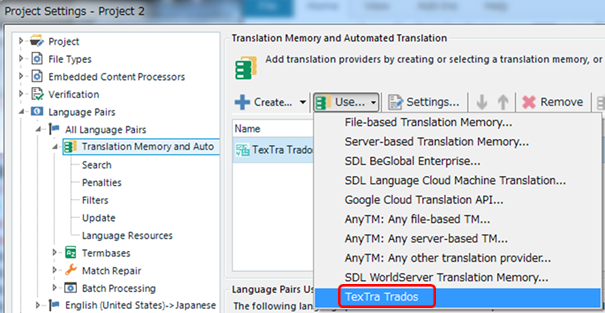
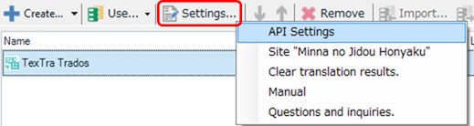

Translation Provider
・Adding
TP
Project
Settings > Language Pairs > Translation Memory and Automated
Translation
> Use > TexTra
Trados

・Settings
Select
"TexTra
Trados",
and
click on "Settings"
tab.

・Clear translation
results
Clear
stored translation
results.
To
decrease a cost to retrieve
translations,
show
stored results for same original
texts.
It
is recommended to do
this
after
adding or modifying translation
datas.